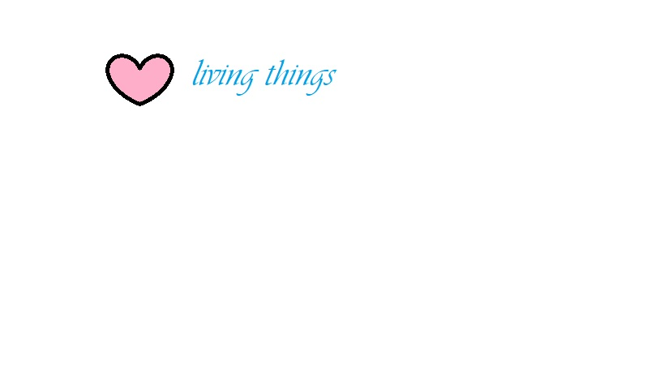

meta name="viewport" content="width=device-width, initial-scale=1.0>

quotes
" A world with no pollution or war,gives long life for plants and animals."
A living thing is distinguished from a dead thing by the multiplicity of the changes at any moment taking place in it. Herbert Spencer
In every living thing there is the desire for love. D. H. Lawrence
Architecture is a living thing. If I want to leave something to the future, it has to be able to change - but retain something of the ethos that we built up over 50 years. Richard Rogers When you have a lot of solitude, any living thing becomes a companion. Jose Mujica I imagine that yes is the only living thing. e. e. cummings The world cannot live without the Arctic; it affects every living thing on Earth and acts as a virtual thermostat, reflecting sunlight and cooling the planet. Philippe Cousteau, Jr. I'm hoping to make a new thing for the world that remains in the mind like a new species of living thing. Frank Auerbach Remember that a noble logical diagram, once recorded, will never die; long after we are gone, it will be a living thing, asserting itself with ever-growing insistency. Willis Polk I mean the whole thing about meditation and yoga is about connecting to the higher part of yourself, and then seeing that every living thing is connected in some way. Gillian Anderson Ranchers need clean water for their stock, farmers need it for their crops, every employer needs it to stay in business, and every living thing needs it for life... The law needs to be clear to protect water quality and the rights of landowners. Mark Udall The mark of a living thing is to be involved in opposites (impossibilities): the living cell that has to be continually adapting itself to stay alive, with its identity. Nicholas Mosley We're talking about a chemical that's out there. Not just on one farm in West Virginia, not even just in the public water of an entire community there, but it's now in water all over the country, all over the planet, in the blood of virtually every living thing. Robert Bilott The collective conscience of a hundred musicians is no light burden. Think for a moment of what it would mean to a pianist if by some miracle every key of his instrument should suddenly become a living thing. Charles Munch One thing that really appeals to me is this idea of music being a living thing that has an evolution that, in a way, enables the artist to sell a process rather than a piece of product. Peter Gabriel Not a living thing was to be seen and the cottages that sat huddled close to the ground remained fast shut; the smoke from the chimneys alone still gave a sign of life. Stijn Streuvels I do not knowingly kill any living thing - including insects or rodents - and I thank my food for sustaining me. Joan Jett Like many other scientists who hold the Catholic faith, I see the Creator's plan and purpose fulfilled in our universe. I see a planet bursting with evolutionary possibilities, a continuing creation in which the Divine providence is manifest in every living thing. I see a science that tells us there is indeed a design to life. Kenneth R. Miller If you are going to be serving a living thing, you have to honor that living thing with some kind of care and thought and preparation to rationalize the taking of that life in some way. Where if you're just grinding up hamburger at McDonald's, I see that as a bit of an affront to living things. Bryan Fuller Dragonflies kill their prey in the air and eat it on the wing. They feed on aerial plankton, which consists of any sort of small living thing that happens to be aloft - mosquitoes, midges, moths, flies, ballooning spiders. Richard Preston Some deeper part of me wants to write comical dialogue; I'd be foolish to not follow that impulse. Now I recognize that if there's energy to a section of work, you go where the energy is. It's a living thing, and you just follow it. Patrick deWitt 'Atlanta' is really trying to put that out there: these are just the lives of these people in this city, and this city is its own breathing, living thing, too. So how do you navigate through life, especially with dreams and aspirations in a world that tells you that you don't deserve to have them. Brian Tyree Henry
Read more at https://www.brainyquote.com/topics/living-thing-quotes